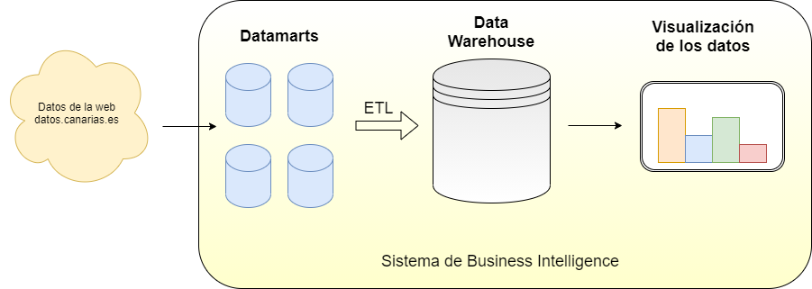

Data Warehouse con Open Data y Power BI

- SQL
- SQL Server
- Power BI
La realización de un trabajo de fin de grado (TFG en adelante) puede presentarse como un trámite doloroso o como una oportunidad para aprender realizando un proyecto. En mi caso, me lo tomé como una buena excusa para profundizar en el campo de los sistemas de Business Intelligence y la ingeniería de datos.
La realización de un trabajo de fin de grado (TFG en adelante) puede presentarse como un trámite doloroso o como una oportunidad para aprender realizando un proyecto. En mi caso, me lo tomé como una buena excusa para profundizar en el campo de los sistemas de Business Intelligence y la ingeniería de datos.
Mi proyecto de TFG se basa en la implementación de un sistema de Business Intelligence, cuya finalidad es la de tratar datos de turistas del web de datos abiertos del Gobierno de Canarias y visualizarlos a través de gráficas interactivas. Para que este sistema sea posible, existe un elemento fundamental que almacena los datos de una manera especial para sus posteriores tratamientos y analíticas: el Data Warehouse. Por esta razón, el título del TFG es Implementación de un Data Warehouse con Tecnologías de Microsoft SQL Server.
Un sistema de Business Intelligence permite a una organización aprovechar sus datos para entender mejor su entorno, sus clientes/usuarios/stakeholders, sus servicios, su impacto y con ello, tomar mejores decisiones.
En la imagen muestro el esquema del sistema de Business Intelligence que implementé para este TFG. Está compuesto por varios componentes que describiré en este blog.
El propósito del proyecto consistía en cubrir varios temas que me interesaban sobre los sistemas de Business Intelligence y con el enfoque puesto en el desarrollo de Data Warehouses. Estos temas se convirtieron en los objetivos específicos del TFG:
Analizar y desarrollar un sistema de almacenamiento tan particular como un Data Warehouse.
Estudiar los procesos de extracción, transformación y carga de datos (ETL) que alimentan a un Data Warehouse.
Utilizar datos públicos como fuente de información y estudiar su utilidad en un ejercicio práctico.
Realizar visualizaciones y gráficas de los datos tratados.
Las tecnologías utilizadas fueron las que ofrece el ecosistema de Microsoft como SQL Server como motor de bases de datos, SQL Server Management Studio como gestor de bases de datos, SQL Integration Services para realizar los procesos ETL y Power BI para las visualizaciones de datos.
Ir al proyecto en Github